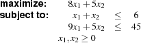
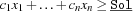
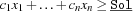

3.1 Introduction
The introduction of linear programming solvers in Oz is based on real-interval constraints introduced in Section 2.2.
The modules LP and RI are provided as contribution (being part of the Mozart Oz 3 distribution1) and can be accessed either by
declare [LP RI] = {Module.link ['x-oz://contrib/LP'
'x-oz://contrib/RI']}or by
import RI at 'x-oz://contrib/RI' LP
at 'x-oz://contrib/LP'as part of a functor definition.
The module LP uses per default LP_SOLVE 2.x as linear programming solver. A version compatible with Mozart Oz can be downloaded via:
Unpack the archive and make it. You will be told what else has to be done. Please note that we are not able to sort out any problems concerning the actual LP_SOLVE 2.x solver and that we are not responsible for that kind of problems resp. bugs.
Linear programming solver (LP solver) handle problems of the following kind [Chv83]:
![\begin{array}{lcccccclr}
\multicolumn{9}{l}{\mbox{\bf minimize resp. maximize:}} \\
& c_1 x_1 & + & \ldots & + & c_n x_n & & & \mbox{objective function}\\ \\
\multicolumn{9}{l}{\mbox{\bf subject to:}} \\
& a_{1,1} x_1 & + & \cdots & + & a_{n,1} x_n & \diamond & b_1 & \mbox{constraints}\\
& \vdots & & & & \vdots & & \vdots & \\
& a_{1,m} x_1 & + & \cdots & + & a_{n,m} x_n & \diamond & b_m & \\
& & & & & & & & (\diamond \in \{\le, = , \ge\}) \\ \\
& \multicolumn{7}{l}{l_i \le x_i \le u_i \;\;\;\;(i = 1,\ldots,n)} & \mbox{bound constraints}.
\end{array}](latex104.png)
The module LP provides a procedure LP.solve to call an LP solver. Further, a procedure to configure the LP solver is provided (see Section 3.1 of ``The Mozart Constraint Extensions Reference'').
A simple example.
A simple example explains best how the LP solver is invoked:
declare
X1 = {RI.var.bounds 0.0 RI.sup}
X2 = {RI.var.bounds 0.0 RI.sup}
Ret Sol
in
{LP.solve
[X1 X2]
objfn(row: [8.0 5.0] opt: max)
constrs(
constr(row: [1.0 1.0] type: '=<' rhs:6.0)
constr(row: [9.0 5.0] type: '=<' rhs:45.0))
Sol
Ret}
The corresponding linear program is as follows:

Note that the bound constraints for the LP solver are derived from the current bounds of the real-interval variables. Further, when minimizing the objective function the following constraint  is added. On the other hand, the constraint  is added when maximizing.
is added. On the other hand, the constraint  is added when maximizing.
Before running the LP solver, the variables are constrained to
X1<real interval:[0, 1.79769e+308]>and
X2<real interval:[0,1.79769e+308]>. The LP solver binds the variables to: X1=3.75, X2=2.25, Sol=41.25, and Ret=optimal.
The tutorial problem: Solving a multiknapsack problem.
This tutorial uses a multiknapsack problem to demonstrate the benefits of combining finite domain constraint programming and linear programming. First, we tackle the problem with finite domain constraints and linear programming separately (see Section 3.2 and Section 3.3). One difficulty arises for linear programming: since integral solutions are required and the LP solver returns non-integral solution, we have to implement a branch&bound solver to obtain an integral solution. Finally, we combine both solvers.
Throughout this tutorial, we use a multi-knapsack problem (taken from [BdB95]. The problem variables  represent the number of goods to be produced. Each good requires certain resources: man power, materials, and machines (represented by matrix
represent the number of goods to be produced. Each good requires certain resources: man power, materials, and machines (represented by matrix  ) where a given capacity per resource () may not be exceeded. Each good generates a profit according to where the overall profit shall be maximal.
) where a given capacity per resource () may not be exceeded. Each good generates a profit according to where the overall profit shall be maximal.
![\begin{array}{l}
\begin{array}{llccccc}
\mbox{\bf maximize:} & \mbox{\bf c} & \times & \mbox{\bf x} & & \\
\mbox{\bf subject to:} & \mbox{\bf A} & \times & \mbox{\bf x} & \le & \mbox{\bf b}\\
& \multicolumn{6}{l}{\mbox{{\bf x} are integral.}}
\end{array} \\
\mbox{where}\\
\begin{array}{l}
\mbox{\bf A}=\left[
\begin{array}{lcccccccccccccc}
\mbox{\textit{man:}} & 1 & 1 & 1 & 1 & 1 & 1 & 1 & 1 & 1 & 1 & 1 & 1 & 1\\
\mbox{\textit{material 1:}} & 0 & 4 & 5 & 0 & 0 & 0 & 0 & 4 & 5 & 0 & 0 & 0 & 0\\
\mbox{\textit{material 2:}} & 4 & 0 & 3 & 0 & 0 & 0 & 3 & 0 & 4 & 0 & 0 & 0 & 0\\
\mbox{\textit{machine 1:}} & 7 & 0 & 0 & 6 & 0 & 0 & 7 & 0 & 0 & 6 & 0 & 0 & 0\\
\mbox{\textit{machine 2:}} & 0 & 0 & 0 & 4 & 5 & 0 & 0 & 0 & 0 & 5 & 4 & 0 & 0\\
\mbox{\textit{machine 3:}} & 0 & 0 & 0 & 0 & 4 & 3 & 0 & 0 & 0 & 0 & 4 & 2 & 1\\
\mbox{\textit{machine 4:}} & 0 & 3 & 0 & 0 & 0 & 5 & 0 & 3 & 0 & 0 & 0 & 3 & 3\\
\end{array}
\right]
\mbox{\bf b}=\left[
\begin{array}{c}
14\\
17\\
20\\
34\\
26\\
16\\
16\\
\end{array}
\right]
\\ \\
\mbox{\bf c}=\left[
\begin{array}{ccccccccccccc}
5 & 7 & 5 & 11 & 8 & 10 & 6 & 8 & 3 & 12 & 9 & 8 & 4\\
\end{array}
\right]\\ \\
\mbox{\bf x}=\left[
\begin{array}{ccccccccccccc}
x_1 & x_2 & x_3 & x_4 & x_5 & x_6 & x_7 & x_8 & x_9 & x_{10} & x_{11} & x_{12} & x_{13}\\
\end{array}
\right]\\
\end{array}\\
\end{array}](latex112.png)
The problem specification as Oz term is as follows:
declare
Problem =
problem(
resources:
resource(
man: r(ta: 14 npp: [1 1 1 1 1 1 1 1 1 1 1 1 1])
material1: r(ta: 17 npp: [0 4 5 0 0 0 0 4 5 0 0 0 0])
material2: r(ta: 20 npp: [4 0 3 0 0 0 3 0 4 0 0 0 0])
machine1: r(ta: 34 npp: [7 0 0 6 0 0 7 0 0 6 0 0 0])
machine2: r(ta: 26 npp: [0 0 0 4 5 0 0 0 0 5 4 0 0])
machine3: r(ta: 16 npp: [0 0 0 0 4 3 0 0 0 0 4 2 1])
machine4: r(ta: 16 npp: [0 3 0 0 0 5 0 3 0 0 0 3 3]))
profit: [5 7 5 11 8 10 6 8 3 12 9 8 4])